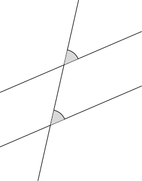
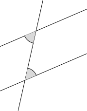
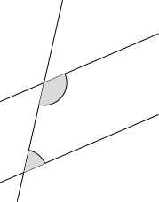

8 平面几何（Plane Geometry I）
平面几何是中学数学中最古老也最美丽的分支之一。它的源头可以追溯到公元前 300 年的欧几里得《几何原本》，而两千多年后的今天，我们仍然用它来训练逻辑推理和严密证明的能力。
本章是 DSE 平面几何课程的第一部分，涵盖从点线面的基本概念到三角形的心这一整条知识链。我们的目标不是背诵定理，而是建立从公理出发、逐步推导出新结论的几何思维习惯。整个几何学的核心技巧只有一个字——「倒角」（Angle Chasing），即利用各种角的关系，将已知条件一步步传递到未知目标。
因为绘图工作量庞大。故本章许多概念并未配好插图，插图稍后会更新。
8.1 几何公理与基础 (Axioms and Foundations)
本节难度上限：T B- ｜ C C ｜ E C ｜ Q C
本节先定义几何学最基本的点、线、面、角，然后给出欧氏几何的五条公理，最后引出平行线理论——这是整个平面几何的基石。
基本元素 (Basic Elements)
点、线、面是几何学的三个原始概念（Primitive Concepts）。它们不能被更基本的概念所定义，我们只能通过直观来理解它们。在纸上，我们用铅笔尖表示点，用尺子画出的痕迹表示直线，而纸面本身就代表平面。
几何图形最基本的元素，表示位置。点没有大小、没有长度、没有面积。
- 定点 (Fixed Point)：位置固定的点。
- 动点 (Moving Point / Locus)：依据特定条件移动的点（详见第 30 章）。
两点确定一条且仅一条直线，向两端无限延伸。直线无粗幼。
- 射线 (Ray)：直线被其上一点分成的两部分之一，有一个端点，向一端无限延伸。
- 线段 (Line Segment)：直线上两点之间的部分，有两个端点，长度有限。
一个平坦的二维表面，向所有方向无限延伸。
经过任意两个不同点，存在且仅存在一条直线。
角与度量 (Angles and Measurement)
在定义了点与直线之后，下一个基本概念是「角」——由两条射线在共同端点处张开的图形。角的度量是几何学的核心语言。
由从同一点（顶点）出发的两条射线所组成的图形。这两条射线称为角的边。
记法：$\angle ABC$，其中 $B$ 为顶点，顶点字母必须放在中间。当上下文明确时，也可简记为 $\angle B$，但本讲义将始终使用完整的三字母记法以避免歧义。
角的度量单位。将一个周角等分为 $360$ 份，每一份称为 $1$ 度（记为 $1^\circ$）。
- 周角 $= 360^\circ$
- 平角 $= 180^\circ$
- 直角 $= 90^\circ$
- $1^\circ = 60'$（分），$1' = 60''$（秒）
| 类型 | 条件 | 名称（英） |
|---|---|---|
| 锐角 | $0^\circ < \theta < 90^\circ$ | Acute Angle |
| 直角 | $\theta = 90^\circ$ | Right Angle |
| 钝角 | $90^\circ < \theta < 180^\circ$ | Obtuse Angle |
| 平角 | $\theta = 180^\circ$ | Straight Angle |
| 反角 | $180^\circ < \theta < 360^\circ$ | Reflex Angle |
| 周角 | $\theta = 360^\circ$ | Round Angle |
- 对顶角 (Vertically Opposite Angles)：两直线相交，所形成的两对相对的角。
- 邻补角 (Adjacent Angles on a Straight Line)：在一条直线上的两个邻角，它们的和为 $180^\circ$。
- 同顶角和 (Angles at a Point)：环绕同一点的若干角之和为 $360^\circ$。

两直线相交，对顶角相等。即若直线 $AB$ 与 $CD$ 相交于点 $O$，则 $\angle AOC = \angle BOD$，$\angle AOD = \angle BOC$。
设直线 $AB$ 与 $CD$ 相交于点 $O$。
由于 $AOB$ 是一条直线，$\angle AOC + \angle COB = 180^\circ$（邻补角）。
由于 $COD$ 是一条直线，$\angle COB + \angle BOD = 180^\circ$（邻补角）。
两式比较：$\angle AOC + \angle COB = \angle COB + \angle BOD$，消去 $\angle COB$，得 $\angle AOC = \angle BOD$。
同理可证 $\angle AOD = \angle BOC$。
设直线 $L_1$ 与 $L_2$ 相交于点 $O$。若两直线相交所成的四个角中有一个是直角，就称 $L_1$ 与 $L_2$ 互相垂直（Perpendicular），记作 $L_1 \perp L_2$；此时称 $L_1$ 为 $L_2$ 的垂线（反之亦然），交点 $O$ 称为垂足。
按上面的邻补角与对顶角定理，一个交角为直角时其余三角也全是直角：它的邻补角等于 $180^\circ - 90^\circ = 90^\circ$，它的对顶角与它的邻补角的对顶角也各为 $90^\circ$。故「有一个交角是直角」与「四个交角都是直角」等价，判定垂直只需检验一个角。
欧氏几何公理 (Euclid's Axioms)
- 任意两点可连一条直线。
- 任意有限线段可沿直线方向无限延长。
- 给定任意线段，可以其一个端点为圆心、该线段为半径作一圆。
- 所有直角都相等。
- 平行公设 (Parallel Postulate)：若一直线与两直线相交，且同侧内角之和小于 $180^\circ$，则这两直线在该侧无限延长后必相交。
第五公设的等价形式：过直线外一点，有且仅有一条直线与该直线平行——是平面几何区别于非欧几何的关键。
平行线与截线 (Parallel Lines and Transversals)
在同一平面内，永不相交的两条直线。记作 $\ell_1 \parallel \ell_2$。
与两条（或以上）直线相交的一条直线。
当一条截线与两条直线相交时，在截点处共形成八个角。根据角与两条被截直线的相对位置，可将这些角分为三组特殊关系：
在截线的同一侧，且分别位于两条被截直线的同一侧的两个角。
形象地说：若将两条被截直线「对齐」放在一起，同位角就像是将其中一个截点处的角「平移」到另一个截点处的对应位置。例如，两直线与截线形成字母 F 形状时，上下两个「同方向」的角即为同位角。
位于两条被截直线之间（内部），且在截线两侧（交错）的两个角。
形象地说：两直线与截线形成字母 Z 形状（或倒 Z 形状）时，位于 Z 字内部的两个角即为内错角。
位于两条被截直线之间（内部），且在截线同一侧的两个角。
形象地说：两直线与截线形成字母 C 形状（或 U 形状）时，位于 C 字内部的两个角即为同旁内角。

查看 TikZ 原始碼
\usepackage{pgfplots}
\pgfplotsset{compat=1.15}
\usetikzlibrary{arrows,arrows.meta}
\begin{document}
\begin{tikzpicture}[scale=1.5]
% 坐标点定义
\coordinate (A) at (0,0.86);
\coordinate (B) at (3.56,2.39);
\coordinate (C) at (3,0);
\coordinate (D) at (2.67,5.18);
\coordinate (E) at (0.89,-2.74);
\coordinate (F) at (1.88,1.67);
\coordinate (G) at (1.35,-0.71);
% 几何元素
\draw[line cap=round,line join=round,line width=1pt] (-0.64,0.58) -- (4.93,2.98);
\draw[line cap=round,line join=round,line width=1pt] (-0.64,-1.57) -- (4.93,0.83);
\draw[line cap=round,line join=round,line width=1pt] (0.85,-2.9) -- (2.45,4.22);
\fill [shift=(F), gray!30] (0,0) -- (23.31:0.6) arc (23.31:77.33:0.6) -- cycle;
\draw[line cap=round,line join=round,line width=1pt] (F) ++(23.31:0.6) arc (23.31:77.33:0.6);
\fill [shift=(G), gray!30] (0,0) -- (23.31:0.6) arc (23.31:77.33:0.6) -- cycle;
\draw[line cap=round,line join=round,line width=1pt] (G) ++(23.31:0.6) arc (23.31:77.33:0.6);
\end{tikzpicture}
\end{document}
查看 TikZ 原始碼
\usepackage{pgfplots}
\pgfplotsset{compat=1.15}
\usetikzlibrary{arrows,arrows.meta}
\begin{document}
\begin{tikzpicture}[scale=1.5]
% 坐标点定义
\coordinate (A) at (0,0.86);
\coordinate (B) at (3.56,2.39);
\coordinate (C) at (3,0);
\coordinate (D) at (2.67,5.18);
\coordinate (E) at (0.89,-2.74);
\coordinate (F) at (1.88,1.67);
\coordinate (G) at (1.35,-0.71);
\coordinate (H) at (1.03,1.3);
% 几何元素
\draw[line cap=round,line join=round,line width=1pt] (0.15,0.92) -- (4.33,2.72);
\draw[line cap=round,line join=round,line width=1pt] (0.15,-1.23) -- (4.33,0.57);
\draw[line cap=round,line join=round,line width=1pt] (1.02,-2.18) -- (2.22,3.16);
\fill [shift=(G), gray!30] (0,0) -- (23.31:0.6) arc (23.31:77.33:0.6) -- cycle;
\draw[line cap=round,line join=round,line width=1pt] (G) ++(23.31:0.6) arc (23.31:77.33:0.6);
\fill [shift=(F), gray!30] (0,0) -- (203.31:0.6) arc (203.31:257.33:0.6) -- cycle;
\draw[line cap=round,line join=round,line width=1pt] (F) ++(203.31:0.6) arc (203.31:257.33:0.6);
\end{tikzpicture}
\end{document}
查看 TikZ 原始碼
\usepackage{pgfplots}
\pgfplotsset{compat=1.15}
\usetikzlibrary{arrows,arrows.meta}
\begin{document}
\begin{tikzpicture}[scale=1.5]
% 坐标点定义
\coordinate (A) at (0,0.86);
\coordinate (B) at (3.56,2.39);
\coordinate (C) at (3,0);
\coordinate (D) at (2.67,5.18);
\coordinate (E) at (0.89,-2.74);
\coordinate (F) at (1.88,1.67);
\coordinate (G) at (1.35,-0.71);
\coordinate (H) at (1.03,1.3);
% 几何元素
\draw[line cap=round,line join=round,line width=1pt] (0.72,1.17) -- (4.9,2.97);
\draw[line cap=round,line join=round,line width=1pt] (0.72,-0.98) -- (4.9,0.82);
\draw[line cap=round,line join=round,line width=1pt] (1.17,-1.48) -- (2.37,3.86);
\fill [shift=(G), gray!30] (0,0) -- (23.31:0.6) arc (23.31:77.33:0.6) -- cycle;
\draw[line cap=round,line join=round,line width=1pt] (G) ++(23.31:0.6) arc (23.31:77.33:0.6);
\fill [shift=(F), gray!30] (0,0) -- (257.33:0.6) arc (257.33:383.31:0.6) -- cycle;
\draw[line cap=round,line join=round,line width=1pt] (F) ++(257.33:0.6) arc (257.33:383.31:0.6);
\end{tikzpicture}
\end{document}设两平行线被一条截线所截，则：
- 同位角相等 (Corresponding Angles Equal)：
图中所标注的两个角相等
- 内错角相等 (Alternate Interior Angles Equal)：
图中所标注的两个角相等
- 同旁内角互补 (Co-interior Angles Supplementary)：
图中所标注的两个角之和为 $180^{\circ}$
设 $\ell_1 \parallel \ell_2$，截线 $t$ 与 $\ell_1$、$\ell_2$ 分别交于点 $A$、$B$。
同位角相等：用反证法。设同位角 $\angle a \neq \angle b$。若 $\angle a < \angle b$，则 $\angle a$ 与 $\angle b$ 的邻补角之和 $< 180^\circ$
（因 $\angle a + \angle b$ 的邻补角 $= \angle a + (180^\circ - \angle b) = 180^\circ + \angle a - \angle b < 180^\circ$）。
由第五公设（平行公设），$\ell_1$ 与 $\ell_2$ 在 $\angle b$ 所在的一侧无限延长后必相交，与 $\ell_1 \parallel \ell_2$ 矛盾。同理，若 $\angle a > \angle b$ 亦导出矛盾。故 $\angle a = \angle b$。
内错角相等：$\angle c$ 与 $\angle a$ 为对顶角，故 $\angle c = \angle a$。又由同位角相等，$\angle a = \angle d$。因此 $\angle c = \angle d$。
同侧内角互补：$\angle e$ 与 $\angle c$ 为邻补角，故 $\angle e + \angle c = 180^\circ$。又由内错角相等，$\angle c = \angle f$。因此 $\angle e + \angle f = 180^\circ$。
此定理的逆命题也同样成立，即也可以通过观察同位角、内错角与同旁内角的相等来推出直线平行
上述三组关系的逆命题同样成立，可用作平行线的判定条件：
- 若同位角相等，则两直线平行。
- 若内错角相等，则两直线平行。
- 若同侧内角互补（和为 $180^\circ$），则两直线平行。
（同位角相等 $\implies$ 平行）：用反证法。设截线 $t$ 与 $\ell_1$、$\ell_2$ （$\ell_1 \neq \ell_2$） 分别交于点 $A$、$B$，同位角相等（$\angle a = \angle b$）。
若 $\ell_1 \nparallel \ell_2$，则 $\ell_1$ 与 $\ell_2$ 必在某一侧相交，设交点为 $C$。
在 $C$ 点处作 $AB$ 的平行线，由于 $\angle a = \angle b$，因此它们的错角也相等，故我们会得到 $$\angle ACB = \angle a-\angle b =0$$
这表明 $\ell_1=\ell_2$ ，与 $\ell_1 \neq \ell_2$ 矛盾。故 $\ell_1 \parallel \ell_2$。
（内错角相等 $\implies$ 平行）：内错角相等 $\implies$ 其对顶角等于同位角。由对顶角相等定理知其同位角相等，故两直线平行。
（同侧内角互补 $\implies$ 平行）：同侧内角互补 $\implies$ 其邻补角等于同位角 。故同位角相等 $\implies$ 两直线平行。
线段的记法与长度 (Notation for Segments and Length)
直线上两点之间的部分，包括这两个端点。
记号上有两个约定：
- $AB$（无上划线）：表示线段 $AB$ 的长度（一个数值）。
- $\overline{AB}$（有上划线）：表示线段 $AB$ 本身（几何图形）。
在本讲义中，为简洁起见，当上下文明确时，$AB$ 也可用来表示线段本身；但若同时涉及长度与图形，会用上划线区分，或是直接写明 “ 线段 $AB$ ”。
连接两点 $A$ 与 $B$ 的线段长度，记作 $AB$（即该线段本身的长度）。
这是最基础的距离概念：两点之间线段最短。
关于「点与直线的距离」和「平行线之间的距离」的定义与性质，见第 8.6 节。
中点与内分点 (Midpoint and Point of Division)
若 $M$ 在线段 $AB$ 上且 $AM = MB$，则 $M$ 为 $AB$ 的中点。此时 $AM = MB = \dfrac{1}{2}AB$。
已知 $A$ 和 $B$ 两点，$M$ 为 $AB$ 的中点。若 $AB = 10$，求 $AM$。
$M$ 为中点，故 $AM = \dfrac{1}{2} AB = \dfrac{1}{2} \times 10 = 5$。
若 $P$ 在线段 $AB$ 上，且 $AP : PB = m : n$（其中 $m, n$ 为正实数），则称 $P$ 为 $AB$ 的 $(m:n)$ 内分点。
在线段 $AB$ 上取一点 $P$，使得 $AP : PB = 2 : 3$。若 $AB = 15$，求 $AP$ 和 $PB$。
设 $AP = 2k$，$PB = 3k$，则 $AP + PB = AB = 5k = 15$，故 $k = 3$。
$AP = 6$，$PB = 9$。
8.2 三角形的角 (Angles of a Triangle)
本节难度上限：T B- ｜ C C ｜ E C ｜ Q C
三角形是最简单的多边形，也是几何学中最重要的研究对象：任何多边形都可以分割成若干个三角形来处理。因此，三角形的角度性质是核心工具。
在讨论角度关系之前，我们必须先明确「三角形的内角」是什么。
三角形的内角 (Interior Angles of a Triangle)
三角形中，由两条边在三角形内部所形成的角。三角形共有三个内角。
在 $\triangle ABC$ 中，三个内角分别为 $\angle BAC$（或 $\angle CAB$），$\angle ABC$（或 $\angle CBA$），$\angle ACB$（或 $\angle BCA$）。其中顶点字母必须放在中间。
注意记号上的约定：
表示以 为顶点、边 与 张成的角。习惯上，当上下文明确时，也可简记为 ，但本讲义将始终使用完整的三字母记法以避免歧义。
三角形的内角和 (Angle Sum of a Triangle)
有了内角的定义，下一个自然的问题是：这三个内角之间有什么关系？
答案是：它们的和永远是
。这是平面几何最重要的定理之一，它的证明优雅地利用了上一节学到的平行线角关系。
三角形 $ABC$ 三个内角的和等于 $180^\circ$。 $$\angle BAC + \angle ABC + \angle ACB = 180^\circ$$
证明的核心思想是「角的搬运」——利用平行线将两个底角「搬」到顶角旁边，拼成一个平角。
过顶点 $A$ 作直线 $DE \parallel BC$。则：
- $\angle DAB = \angle ABC$（内错角相等，$DE \parallel BC$）
- $\angle EAC = \angle ACB$（内错角相等，$DE \parallel BC$）
在 $A$ 点处，$\angle DAB + \angle BAC + \angle EAC = 180^\circ$（平角）。
代入得 $\angle ABC + \angle BAC + \angle ACB = 180^\circ$。
这个证明展示了平行线工具的强大之处：通过作一条平行辅助线，我们将原本分散在三角形三个顶点处的角「集中」到了一个点，从而利用平角
的性质完成了证明。这种「辅助线 + 平行线搬运角」的策略在几何证明中反复出现。
在 $\triangle ABC$ 中，$\angle BAC = 50^\circ$，$\angle ABC = 60^\circ$。求 $\angle ACB$。
$\angle ACB = 180^\circ - 50^\circ - 60^\circ = 70^\circ$。
三角形的外角 (Exterior Angle of a Triangle)
内角和定理的一个直接推论是外角定理。外角定理在「倒角」中比内角和定理更好用，因为它直接将一个外角与两个不相邻的内角挂钩——少了一步减法。
将三角形的一边延长，延长线与相邻边之间所形成的角称为外角。一个三角形共有 $6$ 个外角（每个顶点两个，对顶角相等）。
若外角的顶点为点 $A$，则我们称该外角为点 $A$ 处的外角。
三角形的一个外角等于与它不相邻的两个内角之和。 $$\text{外角} = \text{不相邻内角}_1 + \text{不相邻内角}_2$$
设 $\angle ACD$ 为 $\triangle ABC$ 在顶点 $C$ 处的外角。
由平角关系：$\angle ACB + \angle ACD = 180^\circ$。
由定理（三角形内角和）：$\angle BAC + \angle ABC + \angle ACB = 180^\circ$。
两式对比即得 $\angle ACD = \angle BAC + \angle ABC$。
这个证明的结构值得注意：我们写了两个都等于
的等式，然后比较它们的左边，消去共同项 即得结论。这种「列两个等式再对比」的技巧在几何证明中非常常用。
三角形的任意一个外角均大于与其不相邻的任一内角。
这个推论是显然的，因为任何一个外角都是与其不相邻的两个内角之和。
在 $\triangle PQR$ 中，$\angle QPR = 40^\circ$，$\angle PQR = 75^\circ$。求点 $R$ 处的外角。
由外角定理： $$\begin{aligned}
\text{点 $R$ 处的外角} &= \angle QPR + \angle PQR \\[1ex] &= 75^\circ + 40^\circ \\[1ex] &= 115^\circ \end{aligned}$$
8.3 多边形 (Polygons)
本节难度上限：T C+ ｜ C C ｜ E C ｜ Q C
三角形之后，自然的问题是：四边形、五边形……这些更多边的图形有什么规律？它们的角度性质能否从三角形推导出来？答案是肯定的——任何多边形都可以被对角线分割成若干个三角形，因此多边形的所有角度性质本质上都是三角形内角和
多边形的定义 (Definition of a Polygon)
由三条或以上的线段首尾顺次相连所形成的封闭平面图形。
- 凸多边形 (Convex Polygon)：所有内角均 $< 180^\circ$，且任意两点的连线段都完全落在多边形内部。
- 凹多边形 (Concave Polygon)：至少有一个内角 $> 180^\circ$。
- $n$ 边形有 $n$ 个顶点、$n$ 条边、$n$ 个内角。
DSE 考试中，除非特别说明，讨论的都是凸多边形。
在凸多边形之中，有一类特别规整的图形：正多边形，它把「所有边相等」和「所有角相等」同时做到了极致。
各边均相等、各内角均相等的凸多边形。
正三角形 (Equilateral Triangle)：即等边三角形，每个内角
。 正四边形 (Square)：即正方形，每个内角 。
「所有边相等」与「所有角相等」这两个条件缺一不可，仅满足其中一个并不足以构成正多边形。
例如菱形：四边相等但角不一定为直角；矩形四角均为直角但边不一定相等。只有正方形两者兼备，因此它是唯一的正四边形。
多边形的内角和 (Sum of Interior Angles)
从一个顶点出发画对角线，
对于任意 $n$ 边形（$n \ge 3$），其内角和为： $$\text{内角和} = (n-2) \times 180^\circ$$
从一个顶点出发，可将 $n$ 边形划分为 $(n-2)$ 个三角形。每个三角形内角和为 $180^\circ$，且这些三角形的内角共同构成多边形的全部内角，故总和为 $(n-2) \times 180^\circ$。
这个公式也印证了三角形的特殊地位：当
时， ，与三角形内角和定理一致。
求下列多边形的内角和：
- 五边形
- 八边形
- $(5-2) \times 180^\circ = 3 \times 180^\circ = 540^\circ$
- $(8-2) \times 180^\circ = 6 \times 180^\circ = 1080^\circ$
正 $n$ 边形的每个内角均相等，其大小为 $$\frac{(n-2) \times 180^\circ}{n}$$
由多边形内角和定理，正 $n$ 边形的内角和为 $(n-2) \times 180^\circ$。
又由正多边形的定义，$n$ 个内角均相等，设每个内角为 $\theta$，则 $$n\theta = (n-2) \times 180^\circ$$
解得 $$\theta = \frac{(n-2) \times 180^\circ}{n}$$
一个正多边形的每个内角为 $135^\circ$。求此多边形的边数。
设边数为 $n$，则每个内角 $= \dfrac{(n-2) \times 180^\circ}{n} = 135^\circ$。
$(n-2) \times 180^\circ = 135^\circ n$
$180^\circ n - 360^\circ = 135^\circ n$
$45^\circ n = 360^\circ$，$n = 8$。
故此多边形为正八边形。
多边形的外角和 (Sum of Exterior Angles)
内角和随边数增长而增大，但外角和却永远不变。无论你画的是三角形还是一百边形，沿着多边形「转一圈」的总角度恒为
将多边形的一条边沿一个方向延长，延长线与相邻边之间的夹角。一般取每个顶点处的一个外角（所有外角朝同一方向）。
任意凸多边形的外角和恒等于 $360^\circ$，与边数 $n$ 无关。 $$\text{外角和} = 360^\circ$$
设凸 $n$ 边形的 $n$ 个顶点处的内角依次为 $\alpha_1, \alpha_2, \ldots, \alpha_n$，对应的外角依次为 $\beta_1, \beta_2, \ldots, \beta_n$。
在每个顶点处，内角与外角互补，故 $$\alpha_1 + \beta_1 = 180^\circ, \alpha_2 + \beta_2 = 180^\circ, \ldots, \alpha_n + \beta_n = 180^\circ$$
将以上 $n$ 个等式相加： $$(\alpha_1 + \alpha_2 + \cdots + \alpha_n) + (\beta_1 + \beta_2 + \cdots + \beta_n) = n \times 180^\circ$$
由多边形内角和定理，$\alpha_1 + \alpha_2 + \cdots + \alpha_n = (n-2) \times 180^\circ$，代入得 $$(n-2) \times 180^\circ + (\beta_1 + \beta_2 + \cdots + \beta_n) = n \times 180^\circ$$
解得 $$\beta_1 + \beta_2 + \cdots + \beta_n = n \times 180^\circ - (n-2) \times 180^\circ = 2 \times 180^\circ = 360^\circ$$
可以这样直观理解：想象你沿着多边形走一圈，每次拐弯时你转过的角度恰好是外角。走完一圈回到起点，你转了一整圈
。
一个正多边形的每个外角为 $30^\circ$。求此多边形的边数。
设边数为 $n$，则 $n \times 30^\circ = 360^\circ$（外角和恒为 $360^\circ$）。
$$n = \frac{360^\circ}{30^\circ} = 12$$
故此多边形为正十二边形。
8.4 全等与相似 (Congruence and Similarity)
本节难度上限：T B- ｜ C C ｜ E C ｜ Q C
在经典几何学中，全等与相似的严格定义涉及「形状」这一概念的精确定义，而判定定理（SSS、SAS、ASA、AAS、AA 等）的完整证明亦相当复杂，通常需借助运动公理或坐标几何工具。
为聚焦于 DSE 考试的解题应用，本章对全等与相似的讨论偏重应用导向，不追求「形状」的严格定义，亦不给出各判定定理的完整证明。读者应将判定条件视为给定的推理工具，重点掌握如何运用它们进行几何论证。
两个三角形何时「完全相同」？何时「形状相同但大小不同」？这就是全等与相似要回答的问题。它们是几何证明中最重要的推理工具——很多角相等或边相等的结论，都是通过先证明两个三角形全等或相似，再「对应元素相等」推出的。
全等三角形 (Congruent Triangles)
两个图形（尤其是三角形）的形状和大小完全一样，即
- 它们可以通过平移、旋转或反射而完全重合。
- 对应边相等。
条目 1. 与 2. 完全等价。
当 $\triangle ABC$ 全等于 $\triangle DEF$ 时，记作 $$\triangle ABC \cong \triangle DEF$$ 书写时须严格对应顶点次序（$A \leftrightarrow D$，$B \leftrightarrow E$，$C \leftrightarrow F$）。
牢记顶点次序必须严格对应——这是 DSE 的扣分重灾区。例如，
以下任何一组条件成立时，两个三角形全等。判定条件的核心思想是：给定足够多的对应边相等关系和对应角相等关系，三角形的形状和大小就被唯一确定了。
- SSS（边边边，Side-Side-Side）：三边对应相等。（即全等三角形的定义）
- SAS（边角边，Side-Angle-Side）：两边及其夹角对应相等。
注意：「角」必须是两边的夹角——这是 DSE 判断题常考的陷阱。若给出的是两边及一个非夹角，不能判定全等。
- ASA（角边角，Angle-Side-Angle）：两角及其夹边对应相等。
- AAS（角角边，Angle-Angle-Side）：两角及其中一角的对边对应相等。
AAS 成立的原因：三角形内角和固定 $180^\circ$，故两个角相等时已可推出第三个角相等，相当于 AAA。再给出一边相等，即可唯一确定三角形。AAS 本质上是 ASA 的推论。
- RHS（直角斜边直角边，Right angle-Hypotenuse-Side）：在直角三角形中，斜边及一条直角边对应相等。
正如一开始所说的，该定理的证明在经典几何学领域非常复杂，一个便捷的证明需要学习有关正弦定理与余弦定理的知识。我们将在第 32 章中学习并处理这个证明。
如图，$AB = DE$，$\angle BAC = \angle EDF$，$AC = DF$。求证 $\triangle ABC \cong \triangle DEF$。
$AB = DE$，$\angle BAC = \angle EDF$，$AC = DF$。
两边及其夹角对应相等，由 SAS 得 $\triangle ABC \cong \triangle DEF$。
在 $\triangle QPR$ 和 $\triangle QRS$ 中，$\angle QPR = 90^\circ$，$\angle QPS = 90^\circ$，$PQ = 5$，$QR = QS = 12$。证明 $\triangle PQR \cong \triangle PQS$。
两三角形均为直角三角形，斜边 $QR = QS = 12$。
- $\triangle QPR$ 及 $\triangle QRS$ 有共同的直角边 $PQ = 5$，这被称为公共边。
- $\triangle QPR$ 及 $\triangle QRS$ 的斜边长度相同，均为 $12$。
由 RHS 得 $\triangle PQR \cong \triangle XYZ$。
相似三角形 (Similar Triangles)
相似比全等更「宽松」——形状相同即可，大小可以不同。相似三角形在实际应用中极为广泛，因为很多几何问题中我们并不需要证明两个图形完全重合，只需利用对应边的比例关系进行计算。
，记作 $\sim$：两个图形形状相同，但大小可以不同。对于两个相似三角形：
- 对应角相等。
- 对应边成比例（设比例常数为 $k > 0$，即相似比）。
记作 $\triangle ABC \sim \triangle DEF$。
以下任何一组条件成立时，两个三角形相似。判定条件的核心思想是：只要能确定两个三角形的对应角全部相等（形状相同），或对应边成比例（大小成比例），即可判定相似。
- AA（角角，Angle-Angle）：两个角对应相等（第三个角自动相等，因内角和固定 $180^\circ$）。
AA 是 AAA 的简写，是 DSE 中最常用的相似判定条件。
- SSS∼（三边成比例，3 sides proportional）：三组对应边成相同比例。
「成比例」指三组对应边的比值相同，即 $\frac{AB}{DE} = \frac{BC}{EF} = \frac{CA}{FD} = k$，其中 $k > 0$ 为相似比。
- SAS∼（两边成比例且夹角相等，ratio of 2 sides, inc. $\angle$）：两组对应边成比例，且两边的夹角相等。
「角」必须是两边的夹角，与全等 SAS 条件中的要求一致。若给出的是两边成比例但角不是夹角，不能判定相似。
全等与相似的对应关系：全等的「相等」在相似中变成了「成比例」。
- 全等 SSS → 相似 SSS∼；
- 全等 SAS → 相似 SAS∼；
- 全等 ASA/AAS → 相似 AA。
全等是相似在相似比 $k = 1$ 时的特例。
（$\implies$ 当全等时三角形相似，且相似比 $k=1$ ）：设 $\triangle ABC \cong \triangle DEF$。由全等定义，$AB = DE$，$BC = EF$，$CA = FD$，故 $\frac{AB}{DE} = \frac{BC}{EF} = \frac{CA}{FD} = 1$。
由「三边成比例」条件，$\triangle ABC \sim \triangle DEF$，相似比 $k = 1$。
（$\impliedby$ 当相似比 $k=1$ 时三角形全等）：设 $\triangle ABC \sim \triangle DEF$ 且相似比 $k = 1$。则 $$\frac{AB}{DE} = \frac{BC}{EF} = \frac{CA}{FD} = 1$$故 $AB = DE$，$BC = EF$，$CA = FD$。由 SSS 条件，$\triangle ABC \cong \triangle DEF$。
在 $\triangle ABC$ 和 $\triangle DEF$ 中，$\angle BAC = \angle EDF = 50^\circ$，$\angle ABC = \angle DEF = 60^\circ$。求证 $\triangle ABC \sim \triangle DEF$。
$\angle BAC = \angle EDF$，$\angle ABC = \angle DEF$。由 AA 条件得 $\triangle ABC \sim \triangle DEF$。
在 $\triangle PQR$ 和 $\triangle XYZ$ 中，$\dfrac{PQ}{XY} = \dfrac{QR}{YZ} = \dfrac{PR}{XZ} = 2$。求证 $\triangle PQR \sim \triangle XYZ$ 并求相似比。
三组对应边成相同比例 $2$，由「三边成比例」条件得 $\triangle PQR \sim \triangle XYZ$。相似比为 $k = 2$。
若 $\triangle ABC \sim \triangle XYZ$，相似比为 $k$（即 $\dfrac{AB}{XY}=\dfrac{BC}{YZ}=\dfrac{CA}{ZX}=k$），则它们对应边上的高之比也等于 $k$。
若 $\triangle ABC \sim \triangle XYZ$，相似比为 $k$，则 $$\frac{\text{面积}(\triangle ABC)}{\text{面积}(\triangle XYZ)} = k^2$$ 即相似三角形的面积比等于相似比的平方。
先证引理：由 $\triangle ABC \sim \triangle XYZ$，对应角相等（如 $\angle B = \angle Y$）。设 $BD$、$YS$ 分别为 $AC$、$XZ$ 上的高，则 $\triangle ABD \sim \triangle XYS$（两角相等），故 $\dfrac{BD}{YS}=\dfrac{AB}{XY}=k$，即对应高之比为 $k$。
由面积公式，$\text{面积}(\triangle ABC)=\dfrac12\cdot AC\cdot BD$，$\text{面积}(\triangle XYZ)=\dfrac12\cdot XZ\cdot YS$。故 $$\frac{\text{面积}(\triangle ABC)}{\text{面积}(\triangle XYZ)}=\frac{AC\cdot BD}{XZ\cdot YS}=\frac{AC}{XZ}\cdot\frac{BD}{YS}=k\cdot k=k^2.$$
两个相似三角形的相似比为 $3$，若小三角形面积为 $4\mathrm{cm}^2$，求大三角形面积。
面积比为 $3^2=9$，故大三角形面积为 $4\times9=36\mathrm{cm}^2$。
8.5 毕氏定理 (Pythagoras' Theorem)
本节难度上限：T B- ｜ C C+ ｜ E C ｜ Q B-
学完了全等与相似，现在我们有了证明毕氏定理逆定理所需的全部工具。毕氏定理逆定理的证明依赖 SSS 全等条件。我们构造一个已知为直角的三角形，再用 SSS 证明它与原三角形全等，从而推出原三角形也是直角三角形。
毕氏定理是几何学中最著名的定理，没有之一。它的历史可追溯至古巴比伦（公元前 1800 年），比毕达哥拉斯本人早了一千多年。在中国，它被称为「勾股定理」。这条定理之所以重要，是因为它首次将角度（直角）与长度（三边关系）联系在了一起。
毕氏定理
在直角三角形中，斜边长度的平方等于两条直角边长度的平方和。设直角三角形 $ABC$ 中 $\angle ACB = 90^\circ$，$c$ 为斜边，则： $$a^2 + b^2 = c^2$$
因为边长总是正数，因此 $c^2 = a^2+b^2$ 在两边开平方根时，负的部分会被舍弃，只留下正的算术平方根，即 $c= \sqrt{a^2+b^2}$。
这个公式的含义是：以直角三角形的三条边为边长分别作正方形，两个小正方形的面积之和等于大正方形的面积。这正是下面面积法证明的几何直观。
考虑直角三角形 $ABC$ 的四个全等副本，稍作旋转：
将这四个副本拼成一个大正方形，边长为 $a+b$。
大正方形面积等于四个三角形面积之和加上中间小正方形（边长 $c$）的面积：
$$(a+b)^2 = 4 \cdot \dfrac{1}{2}ab + c^2$$
展开左边： $a^2+2ab+b^2 = 2ab+c^2$，约去 $2ab$ 得 $a^2+b^2=c^2$。
在直角三角形中，两条直角边分别为 $3$ 和 $4$。求斜边长度。
$c^2 = 3^2 + 4^2 = 9 + 16 = 25$，故 $c = 5$。
一个梯子长 $10$ m，底部离墙 $6$ m。求梯子顶端离地面的高度（假定地面与墙面垂直）。
梯子、地面和墙面构成直角三角形，梯子为斜边。
设高度为 $h$，则 $h^2 + 6^2 = 10^2$。
$h^2 = 100 - 36 = 64$，$h = 8$ m。
毕氏定理的逆定理 (Converse of Pythagoras' Theorem)
毕氏定理的正向用法是「已知直角三角形→求边长」，但它的逆定理同样重要：「已知三边满足
若三角形的三边长度 $a,b,c$ 满足 $a^2 + b^2 = c^2$，则该三角形为直角三角形，且边长为 $c$ 的边所对的角为直角。
构造一个直角三角形，两直角边为 $a, b$，则由毕氏定理知其斜边为 $\sqrt{a^2+b^2}$。
但由条件 $a^2+b^2=c^2$ 知斜边长等于 $c$。原三角形与我们所构造的直角三角形的三边均相等，由 SSS 知两三角形全等，故原三角形亦为直角三角形。
这个证明的策略是「构造一个已知为直角的三角形，再证明它与原三角形全等」。这是几何证明中「借力打力」的经典手法。
学生常犯的错误是在证明题中混淆两者的使用方向。记住：正定理 = 性质（由直角推出边的等式），逆定理 = 判定（由边的等式推出直角）。
判断以 $5$, $12$, $13$ 为三边的三角形是否为直角三角形。
观察到 $5^2 + 12^2 = 25 + 144 = 169 = 13^2$。
满足 $a^2 + b^2 = c^2$ 的形式，故此三角形为直角三角形。
8.6 平行线的进一步性质 (Further Properties of Parallel Lines)
本节难度上限：T B- ｜ C C ｜ E C ｜ Q B-
8.1 节中我们学习了平行线的角关系——同位角、内错角、同侧内角。这些是「倒角」的核心工具。但平行线的威力不止于角：当多条平行线与截线相交时，截线上被截出的线段之间存在比例关系。这就是本节的主题——截线定理（Intercept Theorem）及其特殊情形中点定理（Mid-point Theorem）。
这两条定理都是 DSE 的必修考点。有 8.4（全等与相似）和 8.5（毕氏定理）的工具，我们现在可以开始讨论这些内容了。
距离的概念 (Concepts of Distance)
在严格证明截线定理之前，我们需要先明确「距离」的两种含义——这是截线定理面积法证明的基础。
从点 $P$ 到直线 $\ell$ 的垂线段（perpendicular segment）的长度。
换言之，过点 $P$ 作 $\ell$ 的垂线，垂足为 $H$，则 $PH$ 即为点 $P$ 到 $\ell$ 的距离。
设 $H$ 为点 $P$ 在直线 $\ell$ 上的垂足，$Q$ 为 $\ell$ 上任意一点（$Q \neq H$），则 $$PH < PQ$$ 即从点到直线的所有连线中，垂线段最短。
此定理是我们选择用垂线段来定义点与直线的距离的原因。
由于 $PH \perp \ell$，$\angle PHQ = 90^\circ$，故在 $\triangle PHQ$ 中，$\angle PHQ$ 为直角。
由毕氏定理，$PQ^2 = PH^2 + HQ^2$。
因为 $Q \neq H$，故 $HQ > 0$，从而 $HQ^2 > 0$，得 $$PQ^2 = PH^2 + HQ^2 > PH^2$$ 因此 $PQ^2 > PH^2$ ，故 $PQ > PH$。
注意长度均大于零，因此我们于最后一步才可直接舍弃平方。详细可参考 Chapter 1 Problem Set 1 Q58(b)。
两条平行线 $\ell_1 \parallel \ell_2$ 之间的距离，定义为在其中一条线上任取一点，该点到另一条线的垂线段长度。
这个定义的良定性（well-definedness）依赖于一个关键事实：平行线之间任意两条垂线段的长度均相等（见下文定理）。
若 $\ell_1 \parallel \ell_2$，则 $\ell_1$ 上任意两点到 $\ell_2$ 的垂线段长度相等。
换言之，平行线之间的距离是一个常数——无论你在哪一点测量，结果都一样。
在 $\ell_1$ 上取两点 $A, B$，分别作 $AC \perp \ell_2$、$BD \perp \ell_2$，垂足为 $C, D$。连接 $AB$。
由作图，$\angle ACD = 90^\circ$，$\angle BDC = 90^\circ$。
由于 $\ell_1 \parallel \ell_2$，考虑截线 $AC$：$\angle BAC$ 与 $\angle ACD$ 为同侧内角，互补。即 $$\angle BAC + \angle ACD = 180^\circ$$ 代入 $\angle ACD = 90^\circ$，得 $\angle BAC = 90^\circ$。
同理，考虑截线 $BD$：$\angle ABD$ 与 $\angle BDC$ 为同侧内角，互补。即 $$\angle ABD + \angle BDC = 180^\circ$$ 代入 $\angle BDC = 90^\circ$，得 $\angle ABD = 90^\circ$。
因此 $\angle BAC = \angle ABD = 90^\circ$，即 $AC \perp \ell_1$ 且 $BD \perp \ell_1$。由「垂直于同一直线的两直线平行」，$AC \parallel BD$。
在 $\triangle ABC$ 与 $\triangle BAD$ 中：
- $AB = BA$（公共边）
- $\angle BAC = \angle ABD = 90^\circ$
- $\angle ABC = \angle BAD$（内错角，$\ell_1 \parallel \ell_2$，截线 $AB$）
由 ASA 得 $\triangle ABC \cong \triangle BAD$，故 $AC = BD$。
这个定理是截线定理（下一节）面积法证明的基石——因为平行线间距离处处相等，我们才能说「同底等高的三角形面积相等」，从而利用面积比推导线段比。
截线定理 (Intercept Theorem)
同高的三角形：若两个三角形的高相等，则它们的面积比等于底边之比。
$$\frac{\text{Area}_1}{\text{Area}_2} = \frac{\text{底}_1}{\text{底}_2}$$
同底的三角形：若两个三角形的底相等，则它们的面积比等于高之比。
$$\frac{\text{Area}_1}{\text{Area}_2} = \frac{\text{高}_1}{\text{高}_2}$$
三角形的面积公式为 $\text{Area} = \frac{1}{2} \times \text{底} \times \text{高}$。
（1）同高情形：设两条三角形的底边分别为 $b_1, b_2$，公共高为 $h$。则 $$\frac{\text{Area}_1}{\text{Area}_2} = \frac{\frac{1}{2}b_1 h}{\frac{1}{2}b_2 h} = \frac{b_1}{b_2}$$ 化简后 $h$ 约去，面积比即底边比。
（2）同底情形：设两条三角形的高分别为 $h_1, h_2$，公共底边为 $b$。则 $$\frac{\text{Area}_1}{\text{Area}_2} = \frac{\frac{1}{2}b h_1}{\frac{1}{2}b h_2} = \frac{h_1}{h_2}$$ 化简后 $b$ 约去，面积比即高之比。
推论「同底等高则面积相等」是（1）或（2）在 $b_1 = b_2$ 或 $h_1 = h_2$ 时的直接结果。
现在，我们正式介绍截线定理：
设 $l_1 \parallel l_2 \parallel l_3$ 为三条平行线，它们被两条截线所截。若一条截线上被截出的线段为 $AB$ 和 $BC$，另一条截线上对应的线段为 $DE$ 和 $EF$，则 $$\frac{AB}{BC} = \frac{DE}{EF}$$
直观理解：三条平行线就像等间距的「栅栏」，它们按相同的比例切割任何穿过它们的直线。
连接 $AE$、$BD$、$BF$、$CE$。
考虑 $\triangle ABE$ 与 $\triangle DBE$：两者共享底边 $BE$。由于 $A$ 和 $D$ 均在一条与 $BE$ 平行的直线上（由平行线性质），由「同底等高的三角形面积相等」， $$\text{Area}(\triangle ABE) = \text{Area}(\triangle DBE)$$
考虑 $\triangle BCE$ 与 $\triangle BFE$：两者共享底边 $BE$。由于 $C$ 和 $F$ 均在一条与 $BE$ 平行的直线上，同理 $$\text{Area}(\triangle BCE) = \text{Area}(\triangle BFE)$$
现在看比值。$\triangle ABE$ 与 $\triangle BCE$ 有相同的高（均以 $E$ 为顶点，$AB$ 和 $BC$ 在同一直线上），故面积比等于底边比： $$\frac{\text{Area}(\triangle ABE)}{\text{Area}(\triangle BCE)} = \frac{AB}{BC}$$
同理，$\triangle DBE$ 与 $\triangle BFE$ 有相同的高（均以 $B$ 为顶点，$DE$ 和 $EF$ 在同一直线上），故 $$\frac{\text{Area}(\triangle DBE)}{\text{Area}(\triangle BFE)} = \frac{DE}{EF}$$
由于分子相等（$\triangle ABE$ 面积 $= \triangle DBE$ 面积）且分母相等（$\triangle BCE$ 面积 $=\triangle BFE$ 面积），有 $$\frac{\text{Area}(\triangle ABE)}{\text{Area}(\triangle BCE)} = \frac{\text{Area}(\triangle DBE)}{\text{Area}(\triangle BFE)}$$ 故此 $$\frac{AB}{BC} = \frac{DE}{EF}$$
如图，$l_1 \parallel l_2 \parallel l_3$，$AB = 4$，$BC = 6$，$DE = 3$。求 $EF$。
由截线定理，$\dfrac{AB}{BC} = \dfrac{DE}{EF}$。
$\dfrac{4}{6} = \dfrac{3}{EF}$，即 $EF = \dfrac{3 \times 6}{4} = 4.5$。
如图，$l_1 \parallel l_2 \parallel l_3 \parallel l_4$，$AB = 2$，$BC = 3$，$CD = 5$。若 $EH = 15$，求 $EF$、$FG$、$GH$。
由截线定理，$EF : FG : GH = AB : BC : CD = 2 : 3 : 5$。
令 $EF = 2k$，$FG = 3k$，$GH = 5k$。总和 $EH = EF + FG + GH = 10k = 15$，故 $k = 1.5$。
$EF = 3$，$FG = 4.5$，$GH = 7.5$。
中点定理 (Mid-point Theorem)
中点定理是截线定理在比例
在 $\triangle ABC$ 中，若 $D$ 为 $AB$ 的中点，$E$ 为 $AC$ 的中点，则 $$DE \parallel BC \text{且} DE = \frac{1}{2} BC$$
作 $CF \parallel AB$ 交 $DE$ 的延长线于 $F$。
在 $\triangle ADE$ 与 $\triangle CFE$ 中：
- $\angle AED = \angle CEF$（对顶角）
- $\angle ADE = \angle CFE$（内错角，$AB \parallel CF$）
- $AE = CE$（已知 $E$ 为 $AC$ 中点）
由 AAS 得 $\triangle ADE \cong \triangle CFE$。
证明 $DE \parallel BC$：
由全等三角形的定义知 $BD = FC$， $DE = EF$。
连接 $BF$，在 $\triangle DBF$ 与 $\triangle CFB$ 中：
- $\angle DBF = \angle CFB$（内错角，$CF \parallel BD$）
- $BF= FB$（公共边）
- $BD = FC$ （由上文给出）
由 SAS 得 $\triangle DBF \cong \triangle CFB$。
故 $\angle BDF = \angle FCB$。
又因 $\angle BDF = \angle DAE + \angle AED$（外角定理）， $\angle FCB = \angle FCE + \angle ACB$： $$\angle DAE + \angle AED = \angle FCE + \angle ACB$$ $$\angle DAE - \angle FCE + \angle AED = \angle ACB$$
因 $\angle DAE = \angle FCE$（ $\triangle ADE \cong \triangle CFE$），故 $\angle AED = \angle ACB$。由同位角相等定理，推出 $DE \parallel BC$。
证明 $DE = \frac{1}{2} BC$：
因 $\triangle DBF \cong \triangle CFB$，有 $DF = BC$。
因 $DE = EF$（$\triangle ADE \cong \triangle CFE$），故 $DF = 2DE$。
所以 $BC = 2DE$，即 $DE = \dfrac{1}{2} BC$
在 $\triangle PQR$ 中，$S$ 和 $T$ 分别为 $PQ$ 和 $PR$ 的中点。若 $QR = 14$，求 $ST$。
由中点定理，$ST \parallel QR$ 且 $ST = \dfrac{1}{2} QR = \dfrac{1}{2} \times 14 = 7$。
在 $\triangle ABC$ 中，$D$ 为 $AB$ 的中点，$E$ 为 $AC$ 上一点。已知 $DE \parallel BC$。求证 $E$ 为 $AC$ 的中点。
这是中点定理的逆命题。由截线定理（将 $DE$ 和过 $A$ 平行于 $DE$ 的直线视为平行线束），$AD : DB = AE : EC$。
因为 $AD = DB$，所以 $AE = EC$，即 $E$ 为 $AC$ 的中点。
8.7 三角形 (Triangles)
本节难度上限：T B- ｜ C C ｜ E C ｜ Q B-
学完了全等与相似，现在可以回头系统地讨论三角形的分类和性质。在 8.2 节中我们只讨论了三角形的角，现在有了全等工具，可以进一步证明三角形的更多性质。
三角形的分类 (Classification of Triangles)
三角形可以根据边的相等关系或角的大小进行分类。两种分类方式相互制约。例如，等边三角形的三个角必然相等（各
- 等边三角形 (Equilateral Triangle)：三条边的长度均相等。三个角均为 $60^\circ$。
- 等腰三角形 (Isosceles Triangle)：至少有两条边的长度相等。相等的两边称为腰，第三边称为底。
- 不等边三角形 (Scalene Triangle)：三条边的长度均不相等。
- 锐角三角形 (Acute Triangle)：三个角均为锐角（$<90^\circ$）。
- 直角三角形 (Right Triangle)：有一个角为直角（$=90^\circ$）。
- 钝角三角形 (Obtuse Triangle)：有一个角为钝角（$>90^\circ$）。
一个三角形不可能有多于一个直角或钝角（否则内角和大于 $180^\circ$）。
等腰三角形的性质 (Properties of Isosceles Triangles)
等腰三角形是考试中最常出现的三角形类型。它的对称性带来了丰富的性质，而其中最核心的一条是「等边对等角」——相等的边所对的角也相等。这个定理的证明需要用到全等三角形的工具。
在等腰三角形 $ABC$（$AB=AC$）中，两腰所对的底角相等。 $$\text{若 } AB = AC \text{，则 } \angle ABC = \angle ACB$$
作顶点 $A$ 的垂线交 $BC$ 于 $D$。由 RHS 全等条件 $\triangle ABD \cong \triangle ACD$，得 $\angle ABC = \angle ACB$。
若三角形 $ABC$ 有两角相等，则这两角所对的边也相等。
即 $\angle ABC = \angle ACB \implies AB = AC$。
证明方法与上文定理相同。留作练习。
在等腰三角形中，顶角的角平分线、底边的垂直平分线、以及底边上的中线，三条线重合。
三线合一性质告诉我们：等腰三角形的对称轴就是顶角的角平分线，这条线同时扮演了三种角色。
在等腰三角形 $ABC$ 中，$AB = AC$，$\angle BAC = 80^\circ$。求 $\angle ABC$ 和 $\angle ACB$。
$\angle ABC = \angle ACB$（等腰三角形底角相等）。
$\angle BAC + \angle ABC + \angle ACB = 180^\circ$，即 $80^\circ + 2\angle ABC = 180^\circ$。
$\angle ABC = 50^\circ$，$\angle ACB = 50^\circ$。
在 $\triangle ABC$ 中，$\angle ABC = \angle ACB = 40^\circ$。判断此三角形的类型并求 $\angle BAC$。
因为 $\angle ABC = \angle ACB$，由等角对等边，$AB = AC$，故 $\triangle ABC$ 为等腰三角形。
$\angle BAC = 180^\circ - 40^\circ - 40^\circ = 100^\circ$，亦为钝角三角形。
三角形不等式 (Triangle Inequality)
本篇章起源于一个问题：三条任意长度的线段能组成三角形吗？
事实上，并不能。三角形不等式给出了必要条件：任意两边之和必须大于第三边。这其实是一个关于「最短路径」的几何直觉：从
到 B，走直线一定比绕道 更短。
三角形中任意两边之和大于第三边。 $$a + b > c, b + c > a, c + a > b$$
两点之间线段最短。在 $\triangle ABC$ 中，$AB$ 为 $A$ 到 $B$ 的最短路径，而 $AC + CB$ 为经过 $C$ 的折线路径，故 $AB < AC + CB$。
反过来说，若三条线段不能满足三角不等式，则它们无法构成一个三角形。
在实际使用中，我们只需要检查「最小的两边之和是否大于最大边」即可——如果这一组满足，其他两组自动满足。
判断以下各长度的组线段能否构成三角形：
- $3$, $4$, $5$
- $2$, $7$, $10$
- $3+4=7>5$，$4+5=9>3$，$3+5=8>4$，三组均满足，故可以构成三角形。
- $2+7=9<10$，不满足三角不等式，故不能构成三角形。
8.8 特殊四边形 (Special Quadrilaterals)
本节难度上限：T B- ｜ C C ｜ E C ｜ Q C
四边形是最常见的多边形——书页、桌面、手机屏幕，生活中到处是四边形。但并非所有四边形都一样：有些对边平行，有些四边相等，有些四个角都是直角。这些「特殊四边形」之间有严格的包含关系，理解它们就像理解生物学中的分类——界门纲目科属种，逐层细化。
学完了全等与相似，现在我们有了证明平行四边形性质所需的全部工具。平行四边形的对角线互相平分、对边相等，这些性质的证明都依赖于三角形全等。
平行四边形 (Parallelograms)
平行四边形是四边形的「基石」——矩形、菱形、正方形都是它的特殊情形。平行四边形由「两组对边平行」定义，但由此可以推导出许多等价性质。
两组对边分别平行的四边形。
在平行四边形 $ABCD$ 中：
- 对边相等：$AB = CD$，$BC = DA$
- 对角相等：$\angle DAB = \angle BCD$，$\angle ABC = \angle CDA$
- 对角线互相平分：对角线 $AC$ 与 $BD$ 的交点为两者的中点
连对角线 $AC$ 和 $BD$，设交点为 $O$。
由 $AB \parallel CD$ 得 $\angle ABO = \angle CDO$（内错角）； 由 $BC \parallel DA$ 得 $\angle BAO = \angle DCO$。
再由 $AB = CD$（对边相等）得 $\triangle AOB \cong \triangle COD$（ASA）， 故 $AO = CO$，$BO = DO$。
性质 1 与 2 的证明皆可通过连接对角线，将平行四边形分割为两个三角形并证明其全等后利用全等三角形的定义得出。在此留作练习。
这个证明值得注意的结构是：先利用平行线的角关系建立角相等，再结合对边相等（性质 1）用 ASA 证明三角形全等，从而得到对角线互相平分。每一步都建立在前面已证明的性质之上，这正是几何学「层层递进」的演绎风格。
以下任一条件成立时，四边形为平行四边形：
- 两组对边分别平行。（定义）
- 两组对边分别相等。
- 两组对角分别相等。
- 对角线互相平分。
- 一组对边平行且相等。
这五条判定条件是等价的，即满足任何一条就等同于满足全部。在解题时，选择哪条取决于题目给出的已知条件。例如，题目给出了对角线交点的信息，就用条件 4；给出了边长信息，就用条件 2。
在平行四边形 $ABCD$ 中，$\angle DAB = 70^\circ$，$AB = 8$。求：
- $\angle BCD$
- $CD$ 的长度
- $\angle BCD = \angle DAB = 70^\circ$（平行四边形对角相等）。
- $CD = AB = 8$（平行四边形对边相等）。
特殊的平行四边形 (Special Parallelograms)
在平行四边形的基础上增加限制条件，就得到更特殊的四边形。矩形、菱形、正方形三者不是独立的分类——它们之间有着严格的包含关系，每一层都在上一层的性质之上增添了新的特性。
矩形 (Rectangle)
矩形 = 平行四边形 + 一个直角。由于平行四边形的对角相等，一旦有一个角是
四个角均为直角的平行四边形。
在矩形 $ABCD$ 中：
- 继承平行四边形性质：对边相等、对角相等、对角线互相平分。
- 对角线相等：$AC = BD$。
在矩形 $ABCD$ 中，$AB \parallel CD$，$AD \parallel BC$（平行四边形），且 $\angle DAB = \angle ABC = \angle BCD = \angle CDA = 90^\circ$。
考虑 $\triangle ABD$ 与 $\triangle DCA$：
- $AB = CD$（平行四边形对边相等）
- $AD = DA$（公共边）
- $\angle DAB = \angle CDA = 90^\circ$（矩形）
由 SAS，$\triangle ABD \cong \triangle DCA$，故 $BD = AC$。
菱形 (Rhombus)
菱形 = 平行四边形 + 邻边相等。由于平行四边形的对边本来就相等，一旦一组邻边相等，四条边就全部相等。菱形继承了平行四边形的全部性质，并额外拥有对角线垂直与对角线平分内角的特性。
四条边均相等的平行四边形。
在菱形 $ABCD$ 中：
- 继承平行四边形性质：对边相等、对角相等、对角线互相平分。
- 对角线互相垂直：$AC \perp BD$。
- 对角线平分各组内角：$AC$ 平分 $\angle DAB$ 与 $\angle BCD$；$BD$ 平分 $\angle ABC$ 与 $\angle CDA$。
设对角线 $AC$ 与 $BD$ 交于点 $O$。由平行四边形性质，$O$ 为 $AC$ 与 $BD$ 的共同中点，即 $AO = OC$，$BO = OD$。
对角线垂直：考虑 $\triangle ABO$ 与 $\triangle CBO$。
- $AB = BC$（菱形四边相等）
- $AO = OC$（平行四边形对角线互相平分）
- $BO = BO$（公共边）
由 SSS，$\triangle ABO \cong \triangle CBO$，故 $\angle AOB = \angle COB$。
由于 $A$、$O$、$C$ 三点共线，$\angle AOB + \angle COB = 180^\circ$（邻补角），代入 $\angle AOB = \angle COB$ 得 $2\angle AOB = 180^\circ$。
故 $\angle AOB = 90^\circ$，即 $AC \perp BOD$。
对角线平分内角：由 $\triangle ABO \cong \triangle CBO$（已证），得 $\angle ABO = \angle CBO$，即 $BD$ 平分 $\angle ABC$。
同理可证：
- $\triangle ADO \cong \triangle CDO$（用 $AD = CD$，$AO = OC$，$DO$ 公共，SSS），得 $\angle ADO = \angle CDO$，即 $BD$ 平分 $\angle ADC$。
- 对称地，$AC$ 平分 $\angle DAB$ 与 $\angle BCD$。
正方形 (Square)
正方形 = （矩形）
四条边均相等且四个角均为直角的四边形。
正方形同时是矩形和菱形，故集合了以下全部性质：
- 对边平行且相等，对角相等，对角线互相平分（继承自平行四边形）
- 对角线相等（继承自矩形）
- 对角线互相垂直，对角线平分各组内角（继承自菱形）
正方形满足矩形的定义（四个角均为直角），故矩形性质的证明直接适用；正方形满足菱形的定义（四条边均相等），故菱形性质的证明直接适用。因此正方形的对角线既相等又垂直，且对角线互相平分并平分各组内角。无需单独再证。
正方形 = 矩形
即正方形是菱形和矩形的交集。可以总结为：正方形是菱形的「角版本」，也是矩形的「边版本」。正方形同时继承了菱形的对角线垂直和矩形的对角线相等，所以正方形的对角线既垂直又相等。
判断以下命题的真伪：
- 正方形是矩形。
- 菱形是正方形。
- 矩形的对角线互相平分。
- 菱形的对角线相等。
- 正方形的对角线互相垂直。
- 真（正方形四个角均为直角，满足矩形定义）
- 伪（菱形仅需四边相等，角不一定为直角）
- 真（矩形是平行四边形，故对角线互相平分）
- 伪（菱形的对角线互相垂直，但未必相等）
- 真（正方形是菱形，继承对角线互相垂直的性质）
梯形 (Trapezium)
梯形是「只有一组对边平行」的四边形。它不像平行四边形那样对称，但等腰梯形有自己独特的性质。
只有一组对边平行的四边形。
- 等腰梯形 (Isosceles Trapezium)：非平行的一组对边（腰）相等的梯形。其底角相等，对角线相等。
在等腰梯形 $ABCD$ 中，$AB \parallel CD$，$AD = BC$，$\angle DAB = 60^\circ$。求 $\angle ABC$。
等腰梯形的底角相等，故 $\angle ABC = \angle DAB = 60^\circ$。
8.9 圆形及扇形 (Circles and Sectors)
本节难度上限：T C+ ｜ C C+ ｜ E C ｜ Q C
圆是几何学中最完美的图形——它拥有无穷多条对称轴，从圆心到圆周上任意点的距离都相等。这一节我们关注圆和扇形的度量问题：弧长和面积。
圆的基本概念 (Basic Concepts of a Circle)
平面上到定点（圆心，$O$）的距离等于定长（半径，$r$）的所有点的集合。
- 半径 (Radius, $r$)：圆心到圆周上任意点的距离。
- 直径 (Diameter, $d$)：穿过圆心且两端在圆周上的线段长度，$d = 2r$。
- 周长 (Circumference, $C$)：圆周（那条曲线本身）一周的长度，$C = 2\pi r$（或 $\pi d$）。
- 弦 (Chord)：连接圆周上任意两点的线段。
弧 (Arc)：圆周的一部分。
本讲义在 轨迹 §30.1.2 把圆当作「到定点等距」这一条件所确定的点集重新定义一次，并把圆周（那条曲线本身）、周长（$2\pi r$，即一周的长度）与圆盘（圆及其内部，面积 $\pi r^2$）三个概念分立；那里的用词为本册的规范用词。
注意弦和弧的区别：弦是直线段，弧是曲线。弦是连接两点的「直线距离」，而弧是「沿着圆走的曲线距离」。
弧长 (Arc Length)
弧长与扇形面积公式的核心思想都是比例。具体而言，我们需要依赖以下两条比例关系：
- 弧长与圆心角成正比：弧长
- 扇形面积与圆心角成正比：扇形面积
「弧长与圆心角成正比」和「扇形面积与圆心角成正比」这两条命题本身是需要证明的定理，而非公理或定义。其完整证明需要严格定义「曲线的长度」与「区域的面积」。例如，圆周的长度需通过内接正多边形周长的「极限」来定义，圆的面积需通过内接正多边形面积的「极限」来定义（这本质上已经进入了分析学的领域，涉及 Riemann 和与面积测度等概念）。这超出了中学数学的范围。在本讲义中，我们将这两条比例关系作为已被广泛接受的几何事实来使用，不在此阶段给出证明。读者的任务是在接受这两条比例关系的前提下，理解并应用弧长公式与扇形面积公式。
设圆半径为 $r$，扇形圆心角为 $\theta$，则该弧的长度 $L$ 为： $$L = 2\pi r \times \frac{\theta}{360^\circ}$$
以「弧长与圆心角成正比」为给定事实，则弧长 $L$ 与圆周 $2\pi r$ 之比等于圆心角 $\theta$ 与周角 $360^\circ$ 之比： $$\frac{L}{2\pi r} = \frac{\theta}{360^\circ}$$ 整理即得 $L = 2\pi r \times \dfrac{\theta}{360^\circ}$。
一个圆的半径为 $10$ cm，圆心角为 $90^\circ$。求对应弧长。
$L = 2\pi \times 10 \times \dfrac{90^\circ}{360^\circ} = 20\pi \times \dfrac{1}{4} = 5\pi \approx 15.71$ cm。
注意：在计算扇形周长时记得加上两条半径：扇形周长
。
扇形面积 (Sector Area)
扇形面积公式与弧长公式完全平行——同样基于「扇形面积与圆心角成正比」这一比例关系（见弧长部分的说明）。
设圆半径为 $r$，扇形圆心角为 $\theta$，则该扇形的面积 $A$ 为： $$A = \pi r^2 \times \frac{\theta}{360^\circ}$$
以「扇形面积与圆心角成正比」为给定事实，则扇形面积 $A$ 与圆面积 $\pi r^2$ 之比等于圆心角 $\theta$ 与周角 $360^\circ$ 之比： $$\frac{A}{\pi r^2} = \frac{\theta}{360^\circ}$$ 整理即得 $A = \pi r^2 \times \dfrac{\theta}{360^\circ}$。
一个圆的半径为 $6$ cm，扇形圆心角为 $120^\circ$。求：
- 扇形面积
- 扇形周长
- $A = \pi \times 6^2 \times \dfrac{120^\circ}{360^\circ} = 36\pi \times \dfrac{1}{3} = 12\pi \approx 37.70$ cm$^2$。
- 弧长 $L = 2\pi \times 6 \times \dfrac{120^\circ}{360^\circ} = 12\pi \times \dfrac{1}{3} = 4\pi$ cm。
扇形周长 $= L + 2r = 4\pi + 12 \approx 24.57$ cm。
8.10 图形的对称性 (Symmetry of Figures)
本节难度上限：T C ｜ C D ｜ E C ｜ Q C
对称性是几何学中一个独立而深刻的主题。一个图形若能在某种变换后与原图重合，则称该图形具有相应的对称性。
轴对称 (Line Symmetry)
若一个图形沿某条直线对折后，直线两侧的部分能够完全重合，则称该图形具有轴对称性。这条直线称为对称轴（Axis of Symmetry）。
例如：等腰三角形有
条对称轴；等边三角形有 条；正方形有 条；正 边形有 条对称轴。
旋转对称 (Rotational Symmetry)
若一个图形绕某点旋转一定角度后能与自身重合，则称该图形具有旋转对称性。旋转 $360^\circ/n$ 后能重合的，称为具有 $n$ 重旋转对称。
例如：等边三角形有
重旋转对称；正方形有 重；圆有无限重旋转对称。
若一个图形绕某点旋转 $180^\circ$ 后能与自身重合，则称该图形具有中心对称。中心对称点即为旋转中心。
平行四边形是中心对称的（对角线交点为对称中心），但一般不是轴对称的。
总结 (Summary)
平面几何的知识体系如同一棵大树：欧几里得公理是根，平行线理论是主干，而三角形、四边形、圆形是分支。掌握它们的关键在于理解逻辑依赖关系——什么定理依赖于什么工具，哪条性质是另一条的推论。
- 几何基础：欧几里得五公理奠定平面几何的逻辑基石。点、线、面为基本对象；线段
- 平行线与角：同位角相等、内错角相等、同侧内角互补——三者互为充要条件，既是平行线的性质也是判定。这是「倒角」的基础工具。
- 三角形的角：内角和
- 多边形：内角和
- 全等与相似：全等（
- 毕氏定理：
- 平行线的进一步性质：点与直线的距离、平行线间距离处处相等（ASA 证明）；截线定理——多条平行线按相同比例切割截线，用面积法证明；中点定理——三角形两边中点连线平行且等于第三边的一半（AAS 证明）。
- 三角形：等腰三角形底角相等（等边对等角）、等角对等边、三线合一；三角不等式
- 特殊四边形：平行四边形对边／对角相等、对角线互相平分；矩形、菱形、正方形层层递进；菱形与矩形的交集为正方形。
- 圆形及扇形：圆周
- 对称性：轴对称（折叠重合）、旋转对称（绕点旋转重合）、中心对称（
- 三角形的心：重心（中线）、内心（角平分线）、外心（垂直平分线）、垂心（高）。内心到边等距，外心到顶点等距。
词汇表 (Glossary)
| 中文 | English |
|---|---|
| 点 | Point |
| 直线 | Line |
| 线段 | Line Segment |
| 射线 | Ray |
| 角 | Angle |
| 平角 | Straight Angle |
| 周角 | Full Angle / Round Angle |
| 欧几里得几何 | Euclidean Geometry |
| 公理 | Axiom / Postulate |
| 平行线 | Parallel Lines |
| 同位角 | Corresponding Angles |
| 内错角 | Alternate Angles |
| 同侧内角 | Co-interior Angles / Allied Angles |
| 距离（两点间） | Distance (between Two Points) |
| 点与直线的距离 | Distance from a Point to a Line |
| 平行线间的距离 | Distance between Parallel Lines |
| 垂直（互相垂直） | Perpendicular Lines |
| 垂线、垂足 | Perpendicular Line, Foot of Perpendicular |
| 垂线段 | Perpendicular Segment |
| 截线定理 | Intercept Theorem |
| 中点定理 | Mid-point Theorem |
| 面积法 | Area Method |
| 同底等高 | Same Base, Same Height |
| 三角形 | Triangle |
| 内角 | Interior Angle |
| 外角 | Exterior Angle |
| 多边形 | Polygon |
| 凸多边形 | Convex Polygon |
| 凹多边形 | Concave Polygon |
| 正多边形 | Regular Polygon |
| 全等 | Congruence |
| 相似 | Similarity |
| 毕氏定理 | Pythagoras' Theorem |
| 等腰三角形 | Isosceles Triangle |
| 等边三角形 | Equilateral Triangle |
| 三角形不等式 | Triangle Inequality |
| 平行四边形 | Parallelogram |
| 矩形 | Rectangle |
| 菱形 | Rhombus |
| 正方形 | Square |
| 梯形 | Trapezium |
| 圆 | Circle |
| 半径 | Radius |
| 直径 | Diameter |
| 圆周 | Circumference |
| 弧长 | Arc Length |
| 扇形 | Sector |
| 轴对称 | Line Symmetry |
| 旋转对称 | Rotational Symmetry |
| 中心对称 | Point Symmetry |
| 重心 | Centroid |
| 内心 | Incentre |
| 外心 | Circumcentre |
| 垂心 | Orthocentre |
反向链接
正在加载反向链接…
本文引用
正在加载…